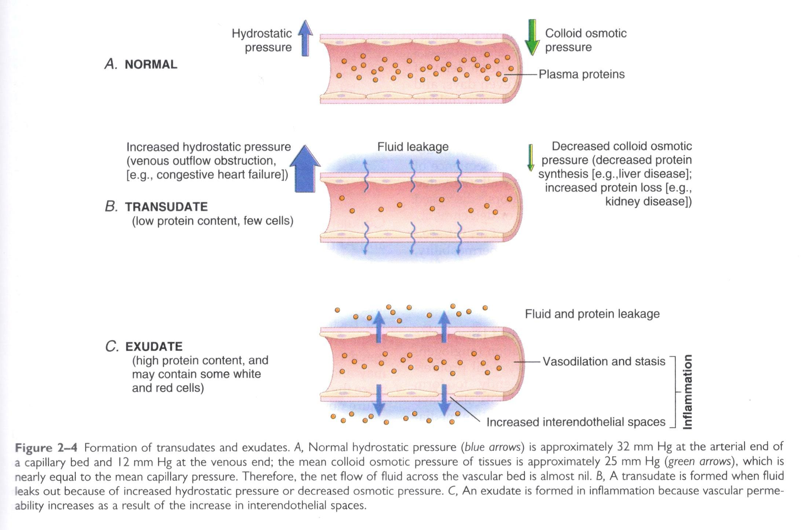

Blood-vessel reaction is always the earliest visible event of inflammation, and it runs in three
stages that follow one another within seconds to minutes.واکنش عروق خونی همواره نخستین رویداد قابلمشاهدهٔ التهاب است و طی سه مرحله ظرف چند ثانیه تا چند دقیقه پیاپی رخ میدهد.
Fig. 1 · Three stages of the caliber change: a brief reflex
constriction, then dilation of arterioles and opening of capillary beds (hyperemia: more red cells
per vessel, the redness and heat of inflammation), then slowing and sludging of flow (stasis) as
fluid leaves through the now-permeable wall and concentrates what remains.سه مرحلهٔ تغییر قطر: نخست انقباض رفلکسی کوتاه، سپس گشادشدگی آرتریولها و بازشدن بسترهای مویرگی (پرخونی: گلبول قرمز بیشتر در هر عروق، یعنی قرمزی و گرمای التهاب)، و سپس کندشدن و لجنایشدن جریان (استاز) چون مایع از دیوارهٔ اکنون نفوذپذیر خارج میشود و آنچه میماند غلیظ میگردد.
TermHyperemia and congestion both mean "more
blood in a vessel," but hyperemia is the active, arteriolar-driven increase seen here; congestion is
the passive, venous-outflow problem seen in heart failure.هایپرمی و احتقان هر دو یعنی «خون بیشتر در یک عرق»، اما هایپرمی افزایشی فعال و ناشی از آرتریول است، درحالیکه احتقان مشکلی غیرفعال در خروج وریدی است که در نارسایی قلبی دیده میشود.
The whole sequence explains four of the five cardinal signs before a single leukocyte has
arrived: redness and heat from the extra, faster-flowing blood of hyperemia, and the
start of swelling as stasis lets fluid and protein begin to leave the vessel. Pain follows once
mediators sensitize nerve endings and once the swelling itself raises local pressure.این توالی چهار مورد از پنج نشانهٔ کلاسیک را پیش از رسیدن حتی یک لکوسیت توضیح میدهد: قرمزی و گرما از خون بیشتر و سریعتر جاری در پرخونی، و آغاز تورم با آغاز خروج مایع و پروتئین از عروق در مرحلهٔ استاز. درد پس از حساسشدن انتهای عصبی توسط میانجیها و افزایش فشار موضعی ناشی از تورم پدید میآید.
III.2 Structural changes in the microvasculature: how the vessel wall leaksتغییرات ساختاری میکروواسکولاتور: چگونگی نشت دیوارهٔ عروقی
Stasis alone would only slow flow; the leak itself needs a structural change in the endothelial
wall. Three distinct mechanisms increase vascular permeability, and they differ in speed, duration,
and which vessels they hit, distinctions that examiners like to test directly.خودِ استاز فقط جریان را کند میکند؛ خودِ نشت نیازمند یک تغییر ساختاری در دیوارهٔ اندوتلیال است. سه سازوکار مجزا نفوذپذیری عروقی را افزایش میدهند، و در سرعت، مدت، و اینکه کدام عروق را درگیر میکنند تفاوت دارند؛ تمایزهایی که ممتحنان دوست دارند مستقیماً بیازمایند.
Table · Three mechanisms of increased permeabilityجدول · سه سازوکار افزایش نفوذپذیری
Mechanism
Trigger
Onset / duration
Vessels affected
Endothelial contractionانقباض اندوتلیال
Histamine, bradykinin, leukotrienes pulling endothelial cells apart at their junctionsهیستامین، برادیکینین، لکوترینها که سلولهای اندوتلیال را از محل اتصال از هم جدا میکنند
Immediate, transient (15–30 min)فوری، گذرا (۱۵ تا ۳۰ دقیقه)
Venulesونولها
Direct endothelial injuryآسیب مستقیم اندوتلیال
Burns, some toxins, severe direct damage killing endothelial cells outrightسوختگی، برخی سموم، آسیب مستقیم شدید که سلولهای اندوتلیال را مستقیماً از بین میبرد
Immediate and sustained, until the vessel is repairedفوری و پایدار، تا زمان ترمیم عروق
Arterioles, capillaries, and venules alikeآرتریولها، مویرگها و ونولها بهیکسان
Increased transcytosisافزایش ترانسسیتوز
Growth factors such as VEGF opening channels of fused intracellular vesicles through the endothelial cellعوامل رشد مانند VEGF که کانالهایی از وزیکولهای درونسلولی جوشخورده را از میان سلول اندوتلیال باز میکنند
Delayed, can be prolongedتأخیری، میتواند طولانی باشد
Venulesونولها
Fig. 2 · The three routes fluid takes across the endothelium.
Only endothelial contraction is reversed by antihistamines; the other two are not, which is why
severe burns or VEGF-driven leaks do not respond to them.سه مسیری که مایع از میان اندوتلیوم عبور میکند. تنها انقباض اندوتلیالی با آنتیهیستامینها برگشتپذیر است؛ دو مورد دیگر چنین نیستند، و به همین دلیل سوختگیهای شدید یا نشت ناشی از VEGF به آنها پاسخ نمیدهند.
Exam trapتلهٔ امتحانی
"Increased hydrostatic pressure" and "increased tissue osmotic pressure" are consequences of the
leak, not separate causes of it: once protein-rich exudate raises the interstitial osmotic pressure
and stasis raises microcirculatory hydrostatic pressure, more fluid is pulled out, but the leak
itself is started by one of the three mechanisms above.«افزایش فشار هیدرواستاتیک» و «افزایش فشار اسموتیک بافتی» پیامدهای نشت هستند، نه علتهای جداگانهٔ آن: بهمحض اینکه اگزودای غنی از پروتئین فشار اسموتیک بینابینی را بالا میبرد و استاز فشار هیدرواستاتیک میکروسیرکولاسیون را افزایش میدهد، مایع بیشتری بیرون کشیده میشود؛ اما خودِ نشت با یکی از سه سازوکار بالا آغاز میشود.
IV.1 Exudation of plasma fluid: Starling forces, transudate vs. exudateترشح مایع پلاسما: نیروهای استارلینگ، ترانسودا در برابر اگزودا
Exudation is defined as the movement of intravascular fluid and cells into the interstitial space,
a body cavity, or a body/mucosal surface. Whether that fluid is a transudate or an exudate depends on
which side of the Starling equation moved, and the two look and behave differently enough to change
management.اگزوداسیون بهمعنای حرکت مایع و سلولهای درونعروقی به فضای بینابینی، یک حفرهٔ بدن، یا سطح بدن/مخاط تعریف میشود. اینکه این مایع ترانسودا باشد یا اگزودا به این بستگی دارد که کدام سمت معادلهٔ استارلینگ جابهجا شده، و این دو از نظر ظاهر و رفتار بهاندازهای متفاوتاند که مدیریت بالینی را تغییر میدهند.

Fig. 3 · Starling forces at the capillary wall. Normally
hydrostatic and oncotic pressure roughly balance. A transudate forms when that balance is disturbed
by pressure or protein changes elsewhere in the body, with the vessel wall itself intact. An exudate
forms in inflammation because the wall itself becomes leaky, letting protein and cells out alongside
the fluid.نیروهای استارلینگ در دیوارهٔ مویرگی. بهطور طبیعی فشار هیدرواستاتیک و اسموتیک تقریباً در تعادلاند. ترانسودا زمانی شکل میگیرد که این تعادل بهدلیل تغییرات فشار یا پروتئین در جای دیگری از بدن بههم بخورد، درحالیکه خودِ دیوارهٔ عروقی سالم است. اگزودا در التهاب شکل میگیرد زیرا خودِ دیوار نشتپذیر میشود و اجازه میدهد پروتئین و سلولها همراه مایع خارج شوند.
Table · Transudate vs. exudate, the differential featuresجدول · ترانسودا در برابر اگزودا، ویژگیهای افتراقی
Feature
Transudate
Exudate
Mechanismسازوکار
Hemodynamic imbalance; vessel wall intactعدم تعادل همودینامیک؛ دیوارهٔ عروقی سالم
Increased vascular permeability; inflammationافزایش نفوذپذیری عروقی؛ التهاب
Protein contentمحتوای پروتئین
Lowکم
Highزیاد
Specific gravityوزن مخصوص
< 1.012کمتر از ۱٫۰۱۲
> 1.020بیشتر از ۱٫۰۲۰
Cell contentمحتوای سلولی
Fewاندک
May be numerous (leukocytes, sometimes red cells)میتواند فراوان باشد (لکوسیتها، گاهی گلبول قرمز)
Typical causesعلل شایع
Congestive heart failure, liver disease, kidney disease/nephrotic syndromeنارسایی قلبی احتقانی، بیماری کبدی، بیماری کلیوی/سندرم نفروتیک
Infection, any acute inflammatory processعفونت، هر فرایند التهابی حاد
Mnemonicیادیار
"Ex" leaks EXtra: an EXudate has EXtra protein and EXtra cells, because
the vessel wall is EXplicitly damaged. A transudate simply TRANSits through an intact wall pushed by
pressure.«اِکس» یعنی نشتِ اضافه: اگزودا (Exudate) پروتئین اضافه و سلول اضافه دارد، چون دیوارهٔ عروقی صراحتاً آسیب دیده است. ترانسودا صرفاً از دیواری سالم که با فشار رانده میشود عبور (ترانزیت) میکند.
DefinitionEdema: an excess of fluid in the
interstitial tissue or serous cavities; it can be either a transudate or an exudate, so "edema" alone
does not tell you the mechanism.ادم: مازاد مایع در بافت بینابینی یا حفرات سروزی؛ میتواند ترانسودا یا اگزودا باشد، پس خودِ واژهٔ «ادم» سازوکار را مشخص نمیکند.